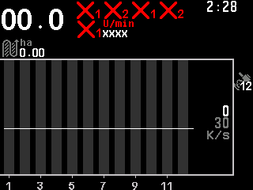
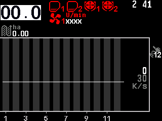

Der Startbildschirm
Was jeder Teil des Startbildschirms am Hectare Mini ist — Geschwindigkeit, Anzeigen, Fläche, Aussaatdichte, die Diagramme und Mengenfelder — und was Sie von hier aus tun können.
Der Startbildschirm ist der wichtigste Arbeitsbildschirm. Er zeigt den Zustand jedes Geräts der Maschine und darunter je ein Diagramm für das Saatgut und für den Dünger. Was er zeigt, folgt dem Profil: Jedes dort eingetragene Gerät bekommt seine Anzeige. Wird der Platz knapp, verkleinert das Panel die Geschwindigkeitszahl oder die Diagramme, und auf einem vollen Bildschirm lässt es die Flächen- oder die Aussaatdichte-Anzeige weg.
Ein Einzelkornsägerät mit Saatgut und Dünger

- Fahrgeschwindigkeit, in km/h. Meldungen zur Geschwindigkeit ersetzen die Zahl. Geschwindigkeit
- Behälter, nummeriert. Rot — leer. Behälter
- Dosierwellen. Grau — in Ordnung; das Symbol dreht sich, solange sich die Welle dreht. Dosierwelle
- Uhr. Die Uhrzeit; sie trägt auch Meldungen. Uhr
- Spuranzeiger. Gelb — beide Arme sind oben. Spuranzeiger
- Gebläse und seine Drehzahl in U/min. Gebläse
- Fläche, die auf dem aktiven Feld bearbeitet wurde, in ha. Fläche
- Aussaatdichte — die Saatdichte in Tausend Körnern je Hektar, im Modus „Einzelkorn“. Aussaatdichte
- Saatdiagramm. Eine Säule je Kornsensor. Das Sektionsdiagramm
- Skala der Fehlstellen und Doppelbelegungen, in Prozent (Modus „Einzelkorn“).
- Mengenfeld Saatgut. Oben die gemessene Menge, darunter der Sollwert, hier in Körnern je Meter. Sollmenge ändern
- Sektionsnummern.
- Düngerdiagramm, hier im Modus „Durchfluss“, mit seiner Überwachungslinie.
- Mengenfeld Dünger. Oben der gemessene Fluss, darunter die Alarmschwelle, in Düngereinheiten je Sekunde.
Eine Drillmaschine am Prüfstand

- Fahrgeschwindigkeit.
- Behälter. Roter Rand — leer.
- Dosierwellen. Rot — Alarm: Die Welle dreht sich nicht.
- Uhr.
- Gebläse. Rot mit XXXX — keine Verbindung zum Gebläsesensor.
- Fläche.
- GPS-Empfang. Das Satellitensymbol und die Zahl der genutzten Satelliten. GPS-Empfang
- Saatsäule. Dunkelgrau — kein Fluss, die Drillmaschine steht.
- Überwachungslinie. Die Alarmschwelle, über das Diagramm gezogen.
- Mengenfeld. Oben der gemessene Fluss, darunter die Alarmschwelle, in Körnern je Sekunde.
- Sektionsnummern.
Alle Anzeigen und ihre Zustände: Anzeigen. Das Diagramm — Säulen, Linien, Farben: Das Sektionsdiagramm.
Zwei Modi
Der Startbildschirm arbeitet in zwei Modi:
- Überwachungsmodus — nach dem Einschalten. Sie beobachten die Arbeit und ändern die Mengen.
- Sensoreinstellmodus — halten Sie „MENU“ gedrückt. Ein Gerät erscheint auf weißem Grund; „UP“ und „DOWN“ wechseln zum nächsten Gerät, „PLUS“ und „MINUS“ nehmen es in die Überwachung oder aus ihr, „MENU“ öffnet sein Kontextmenü. „BACK“ verlässt den Modus. Siehe Sensor in die Überwachung nehmen oder aus ihr nehmen.

Was Sie vom Startbildschirm aus tun können
| Aufgabe | So geht es |
|---|---|
| Das Hauptmenü öffnen | „MENU“ |
| Eine Sollmenge oder Alarmschwelle ändern | „PLUS“ / „MINUS“; „UP“ / „DOWN“ wählen das Feld — Sollmenge ändern |
| Das Panel die Alarmschwelle setzen lassen | „BACK“ gedrückt halten, während gesät wird — Alarmschwelle einstellen |
| Die Produktausbringung sperren oder freigeben | „HOME“ gedrückt halten — Ausbringung von Hand sperren |
| Das Menü des Fahrgassen-Durchgangs öffnen | „BACK“ — Nächster Fahrgassen-Durchgang |
| Die Einstellungen eines Geräts öffnen | „MENU“ gedrückt halten, das Gerät wählen, „MENU“ |
| Zum nächsten Arbeitsbildschirm wechseln | „HOME“ — Bildschirme, Menüs und Fenster |
Ihre Maschine tut etwas, das diese Seite nicht beantwortet? Schreiben Sie an support@agriwelt.com — es antwortet ein Ingenieur.